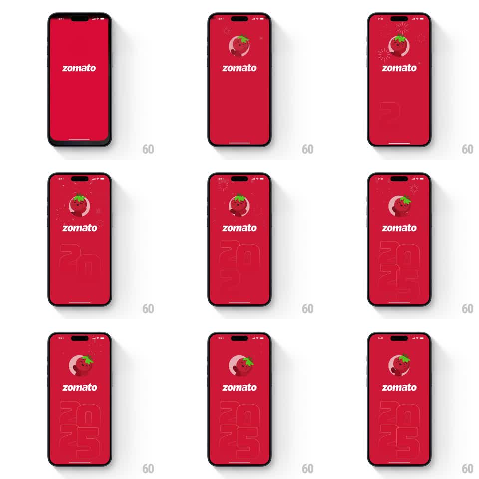

Media
Frame-by-frame

Rebuild this animation 1:1: Zomato's 2025 splash - the tomato mascot waves in over the wordmark while fireworks bloom and the year "2025" builds up stroke by stroke below.

Rebuild this animation 1:1: Zomato's 2025 splash - the tomato mascot waves in over the wordmark while fireworks bloom and the year "2025" builds up stroke by stroke below. ## Integration Integration: stack-agnostic spec - springs given as stiffness/damping, timed motions as duration + curve; map every value to your framework and animation library of choice. ## Scene Full-bleed Zomato red screen: the white "zomato" wordmark mid-screen, the round tomato mascot peeking from behind it, firework bursts in the upper corners, and a large outlined "2025" stacked at the bottom. ## Motion spec Pattern: celebratory splash build-up, ~3s. - The wordmark holds as the anchor while the tomato pops in from behind it (scale 0.3 to 1, spring stiffness 340 damping 13) and waves (tilt +-8deg, three cycles of 300ms). - Fireworks spark in the corners on loop: each burst expands rings and sparks outward (700ms, ease-out), fading as it spreads, with new bursts every ~600ms at random offsets. - The "2025" outline draws itself upward from the bottom edge, digit by digit (400ms per digit stroke reveal, ease-out, 150ms stagger), stacking until the full year fills the lower third. - The digits then idle with a soft glow pulse (opacity +-15%, 2s sine). ## Calibration - The tomato lands before the first firework - character first, celebration second. - The year builds behind the wordmark's baseline, never covering it. ## Reduced motion All elements fade in static. ## Don't miss - The tomato's leaf bobs with a slight delay from the body's tilt - a secondary motion that sells the wave. - Fireworks stay in the corners and top; none burst across the wordmark.